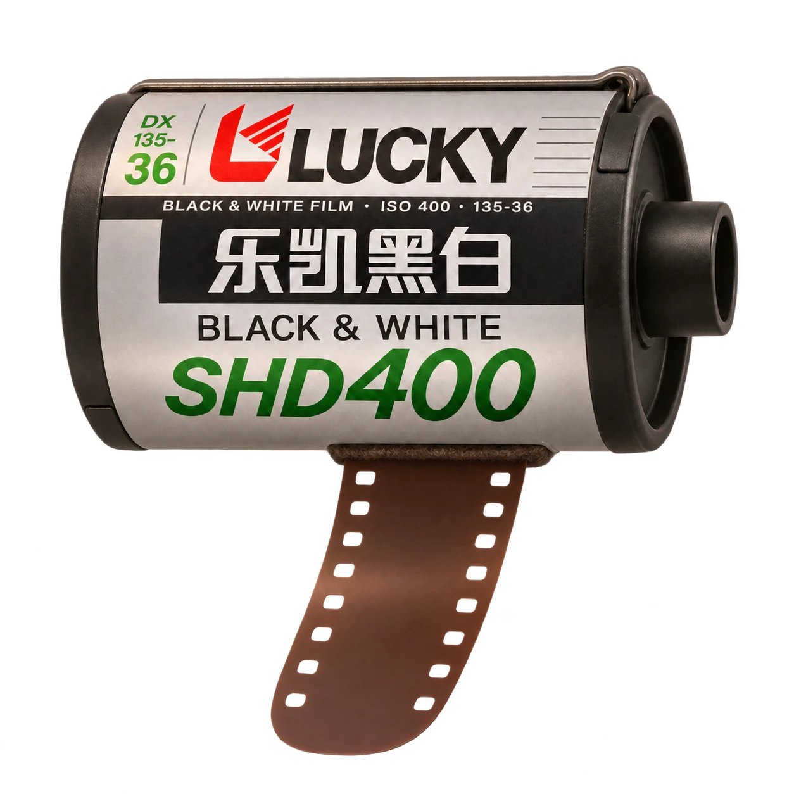
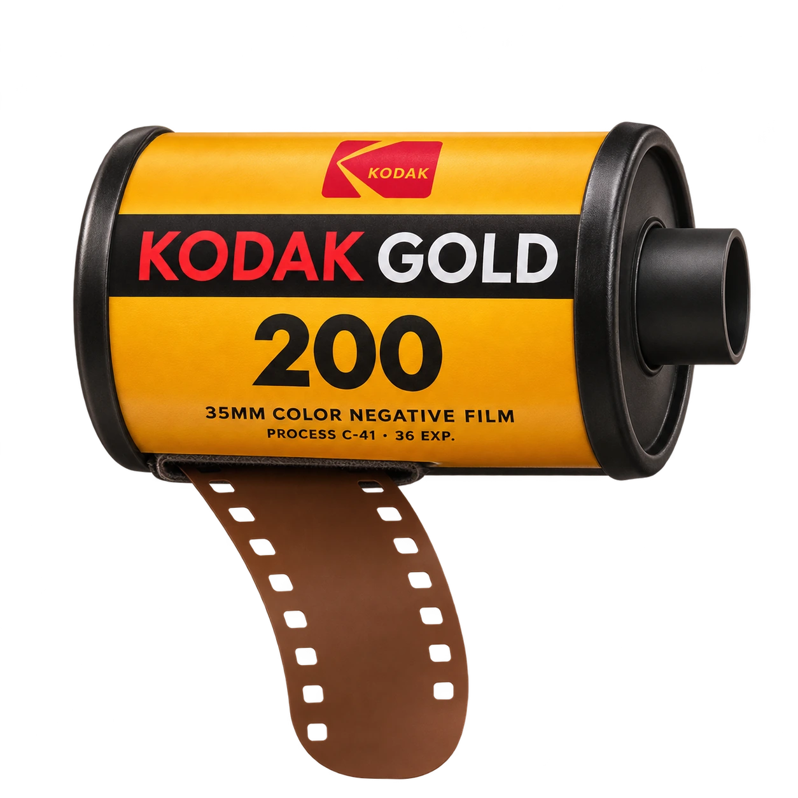

THE FILM CABINET / 胶卷档案
日子，装进一卷。
从一只暗盒，回到一段时间。
选一卷，慢慢往下看。2 卷胶片 · 70 张影像

LUCKY / 黑白负片 / ISO 400
乐凯 SHD400甘南与湖州的黑白影像。
- 拍摄时间
- 2026 年 11 月
- 拍摄地点
- 甘南 · 湖州
34 张照片打开这一卷

KODAK / 彩色负片 / ISO 200
Kodak Gold 200在甘南，收下一卷日光与色彩。
- 拍摄时间
- 2026 年
- 拍摄地点
- 甘南
36 张照片打开这一卷
有的记住颜色，有的只留下光。